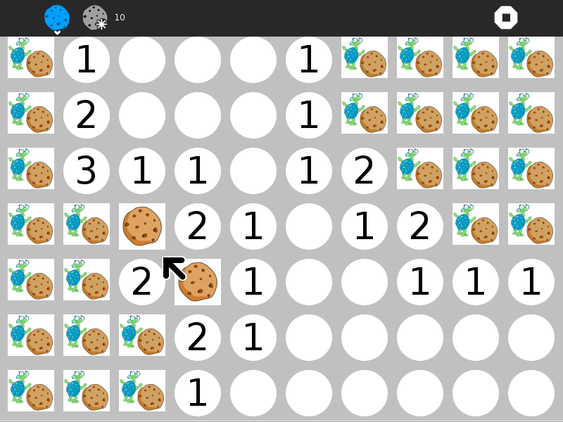
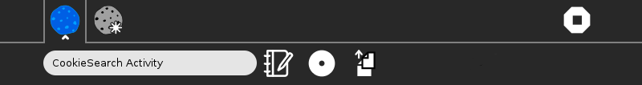

Cookie Search¶
About Cookie Search¶
Most recent release: version 10.
The Cookie Search Activity is a simple mine-sweeper-type game.


Where to get Cookie Search¶
The Cookie Search activity is available for download from the Sugar Activity Library: Cookie Search.
The source code is available on GitHub.
Using Cookie Search¶

- Activity Button
Opens Activity Toolbar
- New Game Button
Launches new game
- Stop Button
Exit activity
Activity title
Write to Journal
Share Button
- Copy Scores Button
Copies score history to Clipboard (to be loaded into Activities/Chart.
How to play¶
Hidden cookies are under the cells.
Clear the board by clicking on the cells.
You can click on either the turtle or the red cookie. If a turtle is clicked, and the cell contains a hidden cookie, you lose the game. Otherwise, a number is shown; how many surrounding cells contain hidden cookies. If there are no surrounding cookies, the cell is blank, and the surrounding cells are revealed. When you determine that a cell contains a hidden cookie, click on the red cookie to mark it as such. When you change your mind, right-click to mark it as unknown.
After all cookies have been marked, and all turtles clicked on, the game will be won.
The game starts with one hidden cookie, and each win the number of cookies is increased.
|
You win :) |
You lose :( |
History of scores |


YouTube tutorials
Winning Game: http://youtu.be/NKRKTm-w0Ig
Losing Game: http://youtu.be/RgCx4vgYx78
Learning with Cookie Search¶
Cookie Search is a exercise in logic.
Modifying Cookie Search¶
Replace the artwork with your own designs. (Note that the way in which the program distinguishes between the turtle and the cookie is by looking at the red component of the image. Pixels with red values between 190 and 210 are “cookie”; all other values are considered turtle.)
Your suggestions for enhancements and/or use cases…
Where to report problems¶
You can report bugs and make feature requests at cookie-search-activity/issues
You are also welcome to leave comments/suggestions.
Credits¶
Cookie Search was written and is maintained by Walter Bender.